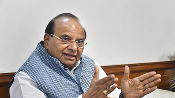
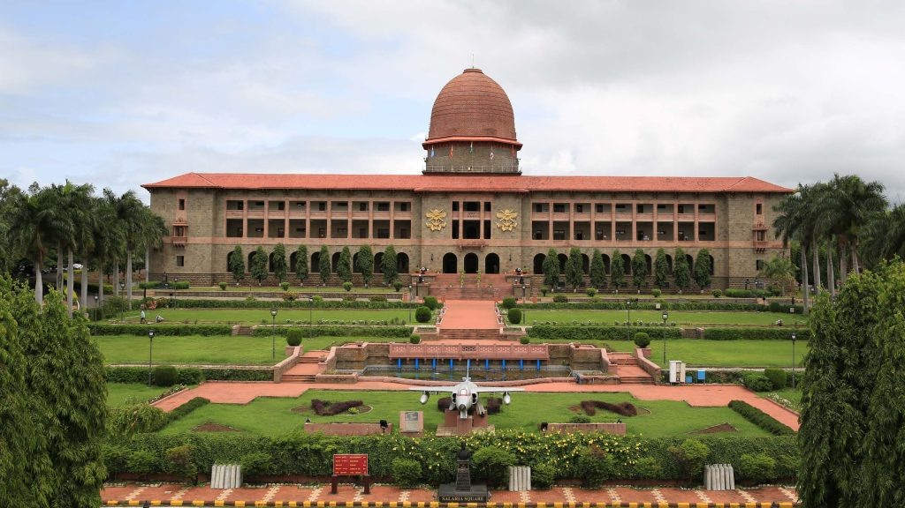

Bengaluru water woes: Water supply board issues fresh advisory to curb
wastage

Amid acute water crisis in Bengaluru, the Karnataka Water Supply and
Sewerage Board issued a fresh advisory on Friday banning drinking
water for non-essential purposes. The water supply board also cited
that a fine will be imposed in case the rules are not followed. Here's
what's not allowed: As per the fresh advisory by the Karnataka Water
Supply and Sewerage Board, drinking water usage is banned for washing
cars or gardening or restoring water fountains.
Chandrababu Naidu to return to NDA after 6 years?

Six years after it snapped its ties with the National Democratic
Alliance (NDA), the Telugu Desam Party (TDP) is all set for its return
to the BJP-led bloc ahead of the Lok Sabha elections 2024, party
sources said. TDP chief N Chandrababu Naidu met Union Home Minister
Amit Shah and Bharatiya Janata Party (BJP) chief JP Nadda on Thursday
exacerbating the noise around the potential alliance before the
announcement of dates of general elections. Naidu and Shah are likely
to meet again on Friday as well, and an official announcement related
to the alliance is anticipated in the next one or two days, reported
NDTV. Jana Sena Party (JSP) President and actor Pawan Kalyan is also
likely to be present in the meeting.
BackBack Dragon Ball creator Akira Toriyama dies aged 68; Naruto, One
Piece artists mourn loss of ‘a hero, a carefree man’
Dragon Ball manga artist and anime creator, Akira Toriyama, has died
at the age of 68. Akira Toriyama, an influential Japanese manga artist
died on 1 March from an acute subdural haematoma or commonly known as
hemorrhage. Eiichiro Oda, the creator of One Piece, and Masashi
Kishimoto, the creator of Naruto, put out heartfelt statements,
mourning the loss of their "inspiration". “It’s our deep regret that
he still had several works in the middle of creation with great
enthusiasm," the studio wrote in a statement. “Also, he would have
many more things to achieve." The studio remembered his “unique world
of creation".
Inflows into equity mutual funds rose to ₹26,866 crore in February:
AMFI data
According to the data released by the Association of Mutual Funds in
India (AMFI) on Friday, inflows in the equity category saw a
significant surge. February witnessed inflows amounting to ₹26,866
crore, reflecting a spike of 23.3 percent, as disclosed by the AMFI
data. For the 36th consecutive month since March 2021, equity funds
have continued to see positive inflows. It is worth mentioning that
investments through systematic investment plans (SIPs) reached a new
all-time high of ₹19,186 crore last month, up from ₹18,838 crore in
January.
Indian government's fiscal balance slows down
Year
Spending (% of GDP)
Revenue (% of GDP)
1995
16.1
11
2000
15.7
9.8
2005
18.2
12.1
2010
15.0
11.2
2015
12.6
8.7
2020
12.2
7.3
2024
15.1
9.4
According to the data released by the Association of Mutual Funds in
India (AMFI) on Friday, inflows in the equity category saw a
significant surge. February witnessed inflows amounting to ₹26,866
crore, reflecting a spike of 23.3 percent, as disclosed by the AMFI
data. For the 36th consecutive month since March 2021, equity funds
have continued to see positive inflows. It is worth mentioning that
investments through systematic investment plans (SIPs) reached a new
all-time high of ₹19,186 crore last month, up from ₹18,838 crore in
January.